Summary
This experiment investigates bread baking optimization. Box-Behnken design to optimize crust color, crumb texture, and rise height by tuning oven temperature, hydration, and proofing time.
The design varies 3 factors: oven temp (C), ranging from 200 to 260, hydration pct (%), ranging from 60 to 80, and proof time (min), ranging from 30 to 120. The goal is to optimize 2 responses: crust score (pts) (maximize) and crumb score (pts) (maximize). Fixed conditions held constant across all runs include flour type = bread_flour, salt pct = 2.
A Box-Behnken design was chosen because it efficiently fits quadratic models with 3 continuous factors while avoiding extreme corner combinations — requiring only 15 runs instead of the 8 needed for a full factorial at two levels.
Quadratic response surface models were fitted to capture potential curvature and factor interactions. The RSM contour plots below visualize how pairs of factors jointly affect each response.
Key Findings
For crust score, the most influential factors were oven temp (65.2%), hydration pct (32.3%), proof time (2.4%). The best observed value was 7.7 (at oven temp = 260, hydration pct = 70, proof time = 120).
For crumb score, the most influential factors were hydration pct (37.4%), proof time (37.3%), oven temp (25.4%). The best observed value was 8.9 (at oven temp = 200, hydration pct = 60, proof time = 75).
Recommended Next Steps
- Run confirmation experiments at the predicted optimal settings to validate the model.
- Consider whether any fixed factors should be varied in a future study.
Experimental Setup
Factors
| Factor | Low | High | Unit |
|---|
oven_temp | 200 | 260 | C |
hydration_pct | 60 | 80 | % |
proof_time | 30 | 120 | min |
Fixed: flour_type = bread_flour, salt_pct = 2
Responses
| Response | Direction | Unit |
|---|
crust_score | ↑ maximize | pts |
crumb_score | ↑ maximize | pts |
Configuration
{
"metadata": {
"name": "Bread Baking Optimization",
"description": "Box-Behnken design to optimize crust color, crumb texture, and rise height by tuning oven temperature, hydration, and proofing time"
},
"factors": [
{
"name": "oven_temp",
"levels": [
"200",
"260"
],
"type": "continuous",
"unit": "C"
},
{
"name": "hydration_pct",
"levels": [
"60",
"80"
],
"type": "continuous",
"unit": "%"
},
{
"name": "proof_time",
"levels": [
"30",
"120"
],
"type": "continuous",
"unit": "min"
}
],
"fixed_factors": {
"flour_type": "bread_flour",
"salt_pct": "2"
},
"responses": [
{
"name": "crust_score",
"optimize": "maximize",
"unit": "pts"
},
{
"name": "crumb_score",
"optimize": "maximize",
"unit": "pts"
}
],
"settings": {
"operation": "box_behnken",
"test_script": "use_cases/87_bread_baking/sim.sh"
}
}
Experimental Matrix
The Box-Behnken Design produces 15 runs. Each row is one experiment with specific factor settings.
| Run | oven_temp | hydration_pct | proof_time |
|---|
| 1 | 230 | 60 | 30 |
| 2 | 230 | 70 | 75 |
| 3 | 260 | 70 | 120 |
| 4 | 260 | 70 | 30 |
| 5 | 230 | 70 | 75 |
| 6 | 230 | 70 | 75 |
| 7 | 200 | 70 | 120 |
| 8 | 260 | 60 | 75 |
| 9 | 230 | 60 | 120 |
| 10 | 260 | 80 | 75 |
| 11 | 200 | 70 | 30 |
| 12 | 230 | 80 | 120 |
| 13 | 200 | 60 | 75 |
| 14 | 200 | 80 | 75 |
| 15 | 230 | 80 | 30 |
Step-by-Step Workflow
1
Preview the design
$ doe info --config use_cases/87_bread_baking/config.json
2
Generate the runner script
$ doe generate --config use_cases/87_bread_baking/config.json \
--output use_cases/87_bread_baking/results/run.sh --seed 42
3
Execute the experiments
$ bash use_cases/87_bread_baking/results/run.sh
4
Analyze results
$ doe analyze --config use_cases/87_bread_baking/config.json
5
Get optimization recommendations
$ doe optimize --config use_cases/87_bread_baking/config.json
6
Multi-objective optimization
With 2 competing responses, use --multi to find the best compromise via Derringer–Suich desirability.
$ doe optimize --config use_cases/87_bread_baking/config.json --multi
7
Generate the HTML report
$ doe report --config use_cases/87_bread_baking/config.json \
--output use_cases/87_bread_baking/results/report.html
Features Exercised
| Feature | Value |
|---|
| Design type | box_behnken |
| Factor types | continuous (all 3) |
| Arg style | double-dash |
| Responses | 2 (crust_score ↑, crumb_score ↑) |
| Total runs | 15 |
Analysis Results
Generated from actual experiment runs using the DOE Helper Tool.
Response: crust_score
Top factors: oven_temp (65.2%), hydration_pct (32.3%), proof_time (2.4%).
ANOVA
| Source | DF | SS | MS | F | p-value |
|---|
| Source | DF | SS | MS | F | p-value |
| oven_temp | 2 | 1.5913 | 0.7956 | 1.007 | 0.4073 |
| hydration_pct | 2 | 0.3855 | 0.1928 | 0.244 | 0.7891 |
| proof_time | 2 | 0.0030 | 0.0015 | 0.002 | 0.9981 |
| Lack | of | Fit | 6 | 17.4375 | 2.9062 |
| Pure | Error | 2 | 1.5800 | | |
| Error | 8 | 19.0175 | 0.7900 | | |
| Total | 14 | 20.9973 | 1.4998 | | |
Pareto Chart

Main Effects Plot

Normal Probability Plot of Effects
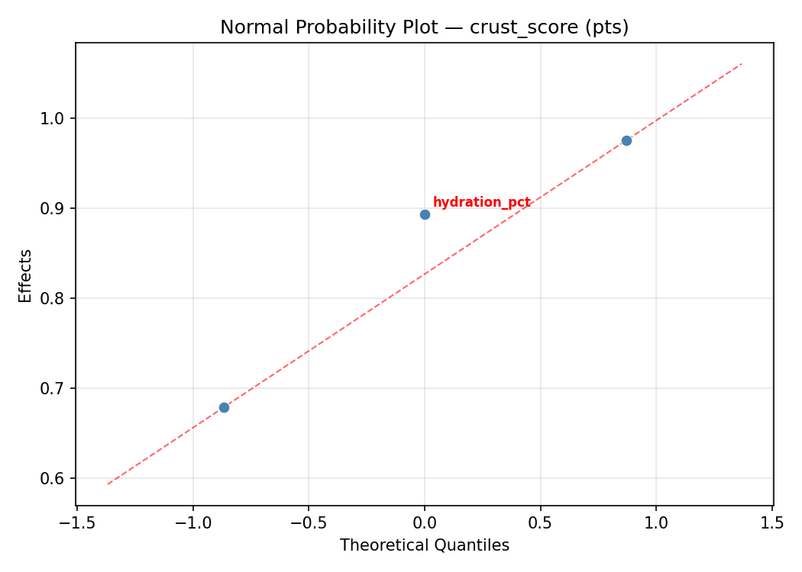
Half-Normal Plot of Effects
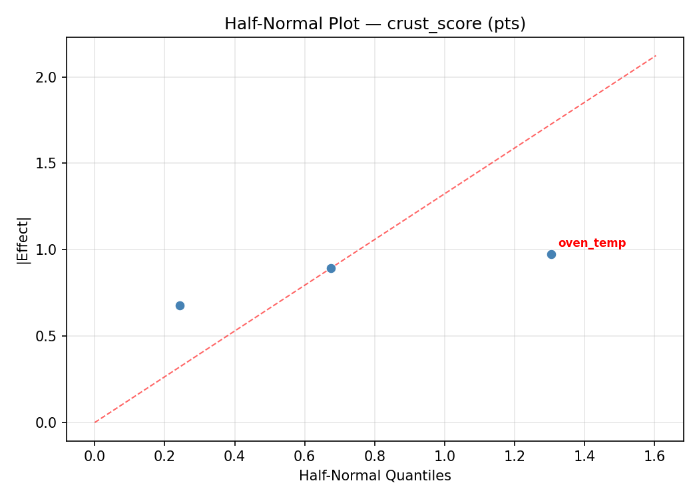
Model Diagnostics
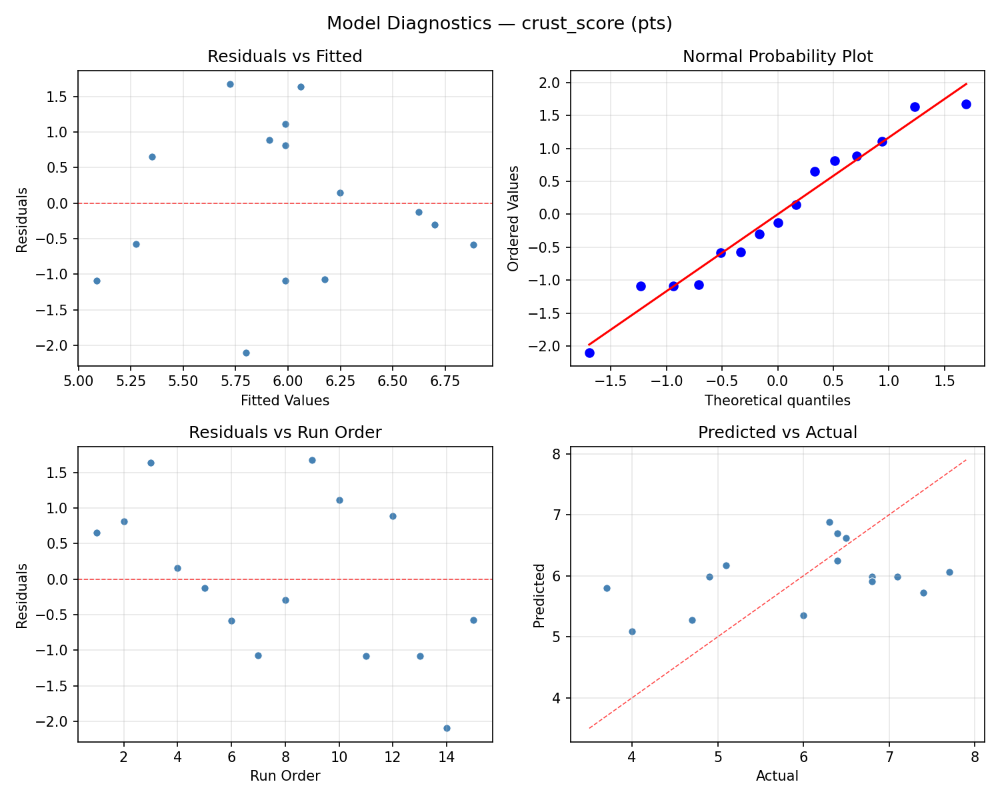
Response: crumb_score
Top factors: hydration_pct (37.4%), proof_time (37.3%), oven_temp (25.4%).
ANOVA
| Source | DF | SS | MS | F | p-value |
|---|
| Source | DF | SS | MS | F | p-value |
| oven_temp | 2 | 1.7647 | 0.8823 | 0.208 | 0.8165 |
| hydration_pct | 2 | 3.6975 | 1.8488 | 0.436 | 0.6613 |
| proof_time | 2 | 2.8972 | 1.4486 | 0.341 | 0.7207 |
| Lack | of | Fit | 6 | 14.9432 | 2.4905 |
| Pure | Error | 2 | 8.4867 | | |
| Error | 8 | 23.4299 | 4.2433 | | |
| Total | 14 | 31.7893 | 2.2707 | | |
Pareto Chart
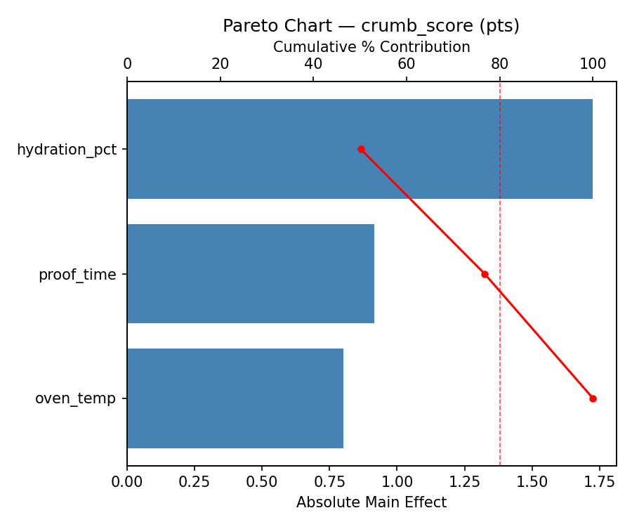
Main Effects Plot

Normal Probability Plot of Effects
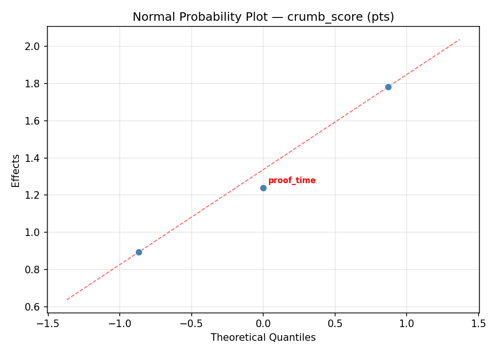
Half-Normal Plot of Effects
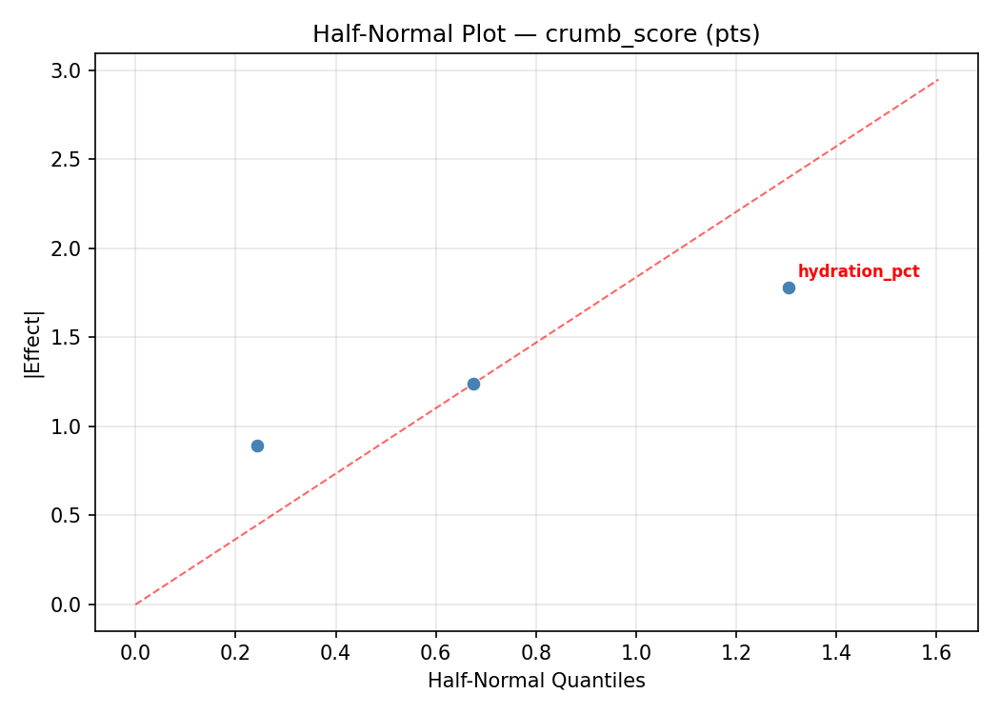
Model Diagnostics
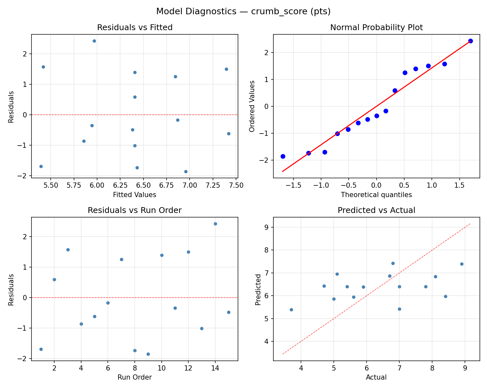
Response Surface Plots
3D surfaces fitted with quadratic RSM. Red dots are observed data points.
crumb score hydration pct vs proof time
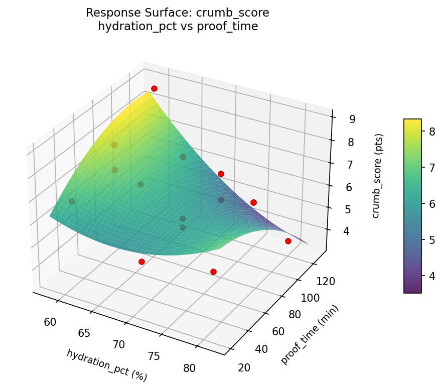
crumb score oven temp vs hydration pct
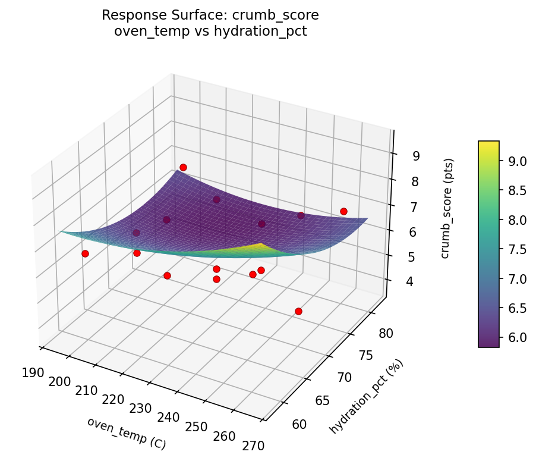
crumb score oven temp vs proof time
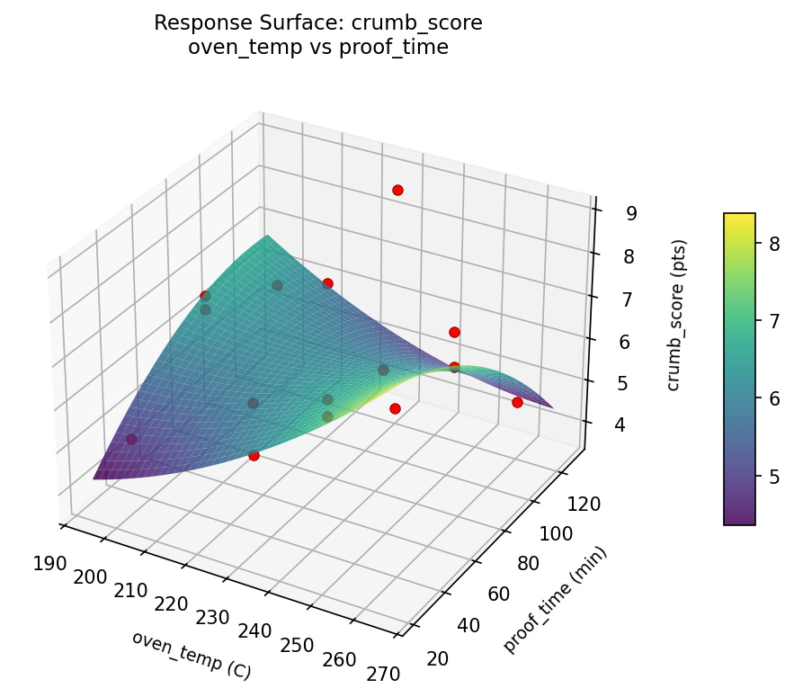
crust score hydration pct vs proof time
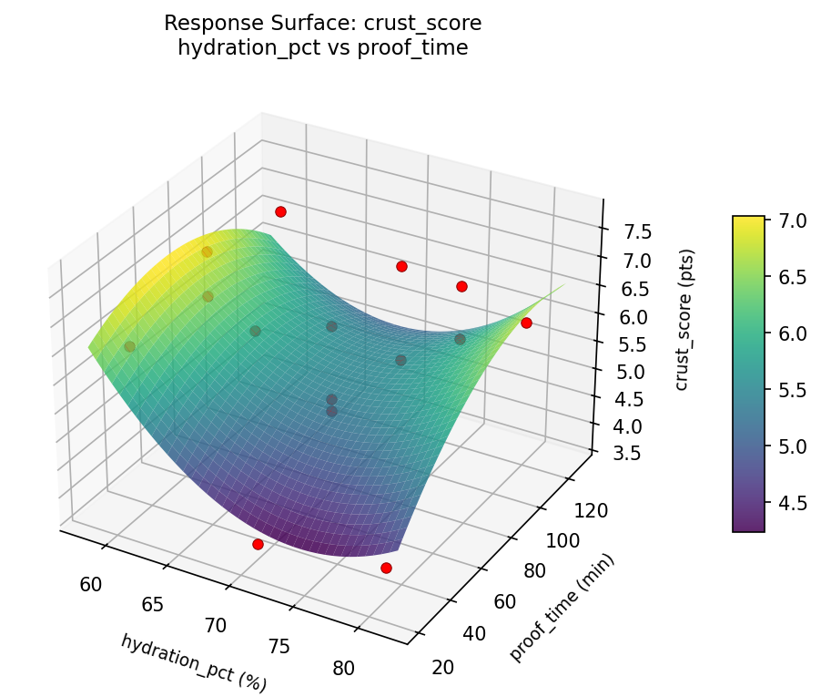
crust score oven temp vs hydration pct

crust score oven temp vs proof time

Multi-Objective Optimization
When responses compete, Derringer–Suich desirability finds the best compromise.
Each response is scaled to a 0–1 desirability, then combined via a weighted geometric mean.
Overall Desirability
D = 0.8461
Per-Response Desirability
| Response | Weight | Desirability | Predicted | Dir |
|---|
crust_score |
1.5 |
|
6.80 0.7500 6.80 pts |
↑ |
crumb_score |
1.5 |
|
8.90 0.9545 8.90 pts |
↑ |
Recommended Settings
| Factor | Value |
|---|
oven_temp | 200 C |
hydration_pct | 70 % |
proof_time | 30 min |
Source: from observed run #12
Trade-off Summary
Sacrifice = how much worse than single-objective best.
| Response | Predicted | Best Observed | Sacrifice |
|---|
crumb_score | 8.90 | 8.90 | +0.00 |
Top 3 Runs by Desirability
| Run | D | Factor Settings |
|---|
| #10 | 0.7897 | oven_temp=260, hydration_pct=80, proof_time=75 |
| #3 | 0.7708 | oven_temp=230, hydration_pct=80, proof_time=120 |
Model Quality
| Response | R² | Type |
|---|
crumb_score | 0.7589 | quadratic |
Full Multi-Objective Output
============================================================
MULTI-OBJECTIVE OPTIMIZATION
Method: Derringer-Suich Desirability Function
============================================================
Overall desirability: D = 0.8461
Response Weight Desirability Predicted Direction
---------------------------------------------------------------------
crust_score 1.5 0.7500 6.80 pts ↑
crumb_score 1.5 0.9545 8.90 pts ↑
Recommended settings:
oven_temp = 200 C
hydration_pct = 70 %
proof_time = 30 min
(from observed run #12)
Trade-off summary:
crust_score: 6.80 (best observed: 7.70, sacrifice: +0.90)
crumb_score: 8.90 (best observed: 8.90, sacrifice: +0.00)
Model quality:
crust_score: R² = 0.0656 (linear)
crumb_score: R² = 0.7589 (quadratic)
Top 3 observed runs by overall desirability:
1. Run #12 (D=0.8461): oven_temp=200, hydration_pct=70, proof_time=30
2. Run #10 (D=0.7897): oven_temp=260, hydration_pct=80, proof_time=75
3. Run #3 (D=0.7708): oven_temp=230, hydration_pct=80, proof_time=120
Full Analysis Output
=== Main Effects: crust_score ===
Factor Effect Std Error % Contribution
--------------------------------------------------------------
oven_temp 0.7643 0.3162 65.2%
hydration_pct 0.3786 0.3162 32.3%
proof_time 0.0286 0.3162 2.4%
=== ANOVA Table: crust_score ===
Source DF SS MS F p-value
-----------------------------------------------------------------------------
oven_temp 2 1.5913 0.7956 1.007 0.4073
hydration_pct 2 0.3855 0.1928 0.244 0.7891
proof_time 2 0.0030 0.0015 0.002 0.9981
Lack of Fit 6 17.4375 2.9062 3.679 0.2291
Pure Error 2 1.5800 0.7900
Error 8 19.0175 0.7900
Total 14 20.9973 1.4998
=== Summary Statistics: crust_score ===
oven_temp:
Level N Mean Std Min Max
------------------------------------------------------------
200 4 5.4500 1.3178 4.0000 6.8000
230 7 6.2143 1.3898 3.7000 7.7000
260 4 6.1250 0.9323 4.9000 7.1000
hydration_pct:
Level N Mean Std Min Max
------------------------------------------------------------
60 4 6.2500 1.1269 4.7000 7.4000
70 7 5.8714 1.1940 4.0000 7.1000
80 4 5.9250 1.6581 3.7000 7.7000
proof_time:
Level N Mean Std Min Max
------------------------------------------------------------
120 4 6.0000 1.8312 4.0000 7.7000
30 4 6.0000 1.5599 3.7000 7.1000
75 7 5.9714 0.7783 4.7000 6.8000
=== Main Effects: crumb_score ===
Factor Effect Std Error % Contribution
--------------------------------------------------------------
hydration_pct 1.2036 0.3891 37.4%
proof_time 1.2000 0.3891 37.3%
oven_temp 0.8179 0.3891 25.4%
=== ANOVA Table: crumb_score ===
Source DF SS MS F p-value
-----------------------------------------------------------------------------
oven_temp 2 1.7647 0.8823 0.208 0.8165
hydration_pct 2 3.6975 1.8488 0.436 0.6613
proof_time 2 2.8972 1.4486 0.341 0.7207
Lack of Fit 6 14.9432 2.4905 0.587 0.7406
Pure Error 2 8.4867 4.2433
Error 8 23.4299 4.2433
Total 14 31.7893 2.2707
=== Summary Statistics: crumb_score ===
oven_temp:
Level N Mean Std Min Max
------------------------------------------------------------
200 4 6.3000 0.6583 5.6000 7.0000
230 7 6.7429 1.7897 4.7000 8.9000
260 4 5.9250 1.7802 3.7000 7.8000
hydration_pct:
Level N Mean Std Min Max
------------------------------------------------------------
60 4 5.6250 0.9287 4.7000 6.8000
70 7 6.8286 1.5152 5.0000 8.9000
80 4 6.4500 1.9774 3.7000 8.4000
proof_time:
Level N Mean Std Min Max
------------------------------------------------------------
120 4 5.7750 0.8421 5.1000 7.0000
30 4 6.9750 1.6215 4.7000 8.4000
75 7 6.4429 1.7738 3.7000 8.9000
Optimization Recommendations
=== Optimization: crust_score ===
Direction: maximize
Best observed run: #3
oven_temp = 260
hydration_pct = 70
proof_time = 120
Value: 7.7
RSM Model (linear, R² = 0.4654, Adj R² = 0.3196):
Coefficients:
intercept +5.9867
oven_temp +0.5500
hydration_pct -0.8875
proof_time +0.3625
RSM Model (quadratic, R² = 0.5838, Adj R² = -0.1654):
Coefficients:
intercept +5.7667
oven_temp +0.5500
hydration_pct -0.8875
proof_time +0.3625
oven_temp*hydration_pct +0.5500
oven_temp*proof_time +0.0500
hydration_pct*proof_time +0.4250
oven_temp^2 +0.3542
hydration_pct^2 -0.0708
proof_time^2 +0.1292
Curvature analysis:
oven_temp coef=+0.3542 convex (has a minimum)
proof_time coef=+0.1292 convex (has a minimum)
hydration_pct coef=-0.0708 negligible curvature
Notable interactions:
oven_temp*hydration_pct coef=+0.5500 (synergistic)
hydration_pct*proof_time coef=+0.4250 (synergistic)
Predicted optimum (from linear model, at observed points):
oven_temp = 260
hydration_pct = 60
proof_time = 75
Predicted value: 7.4242
Surface optimum (via L-BFGS-B, linear model):
oven_temp = 260
hydration_pct = 60
proof_time = 120
Predicted value: 7.7867
Model quality: Weak fit — consider adding center points or using a different design.
Factor importance:
1. hydration_pct (effect: 1.8, contribution: 49.3%)
2. oven_temp (effect: 1.1, contribution: 30.6%)
3. proof_time (effect: 0.7, contribution: 20.1%)
=== Optimization: crumb_score ===
Direction: maximize
Best observed run: #12
oven_temp = 200
hydration_pct = 60
proof_time = 75
Value: 8.9
RSM Model (linear, R² = 0.1333, Adj R² = -0.1031):
Coefficients:
intercept +6.4067
oven_temp -0.0625
hydration_pct -0.4250
proof_time +0.5875
RSM Model (quadratic, R² = 0.5654, Adj R² = -0.2167):
Coefficients:
intercept +7.6667
oven_temp -0.0625
hydration_pct -0.4250
proof_time +0.5875
oven_temp*hydration_pct +0.2500
oven_temp*proof_time +0.9250
hydration_pct*proof_time +0.1500
oven_temp^2 -1.1458
hydration_pct^2 +0.0292
proof_time^2 -1.2458
Curvature analysis:
proof_time coef=-1.2458 concave (has a maximum)
oven_temp coef=-1.1458 concave (has a maximum)
hydration_pct coef=+0.0292 negligible curvature
Notable interactions:
oven_temp*proof_time coef=+0.9250 (synergistic)
Predicted optimum (from linear model, at observed points):
oven_temp = 230
hydration_pct = 60
proof_time = 120
Predicted value: 7.4192
Surface optimum (via L-BFGS-B, linear model):
oven_temp = 200
hydration_pct = 60
proof_time = 120
Predicted value: 7.4817
Model quality: Weak fit — consider adding center points or using a different design.
Factor importance:
1. proof_time (effect: 1.8, contribution: 47.1%)
2. oven_temp (effect: 1.1, contribution: 30.1%)
3. hydration_pct (effect: 0.8, contribution: 22.8%)